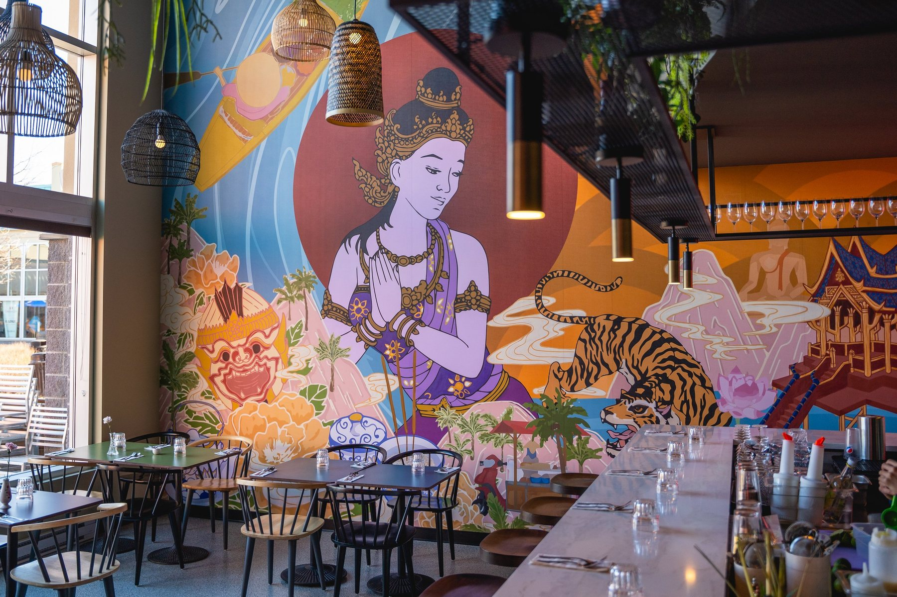
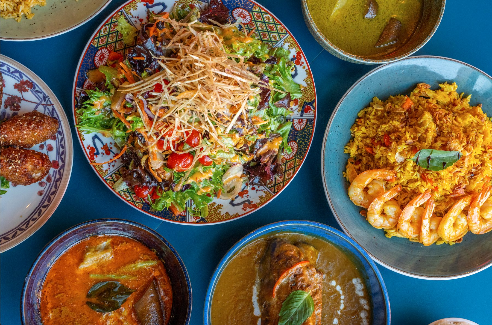
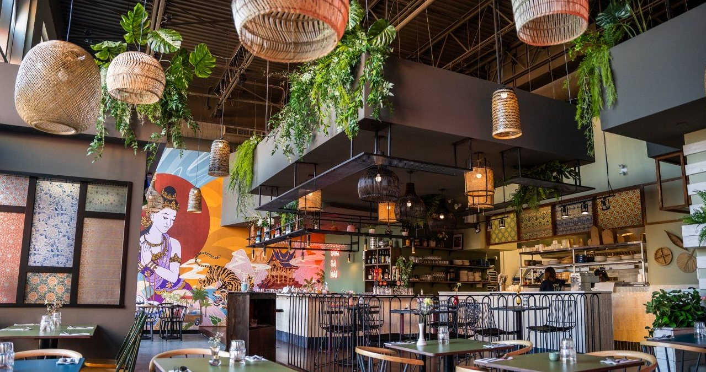
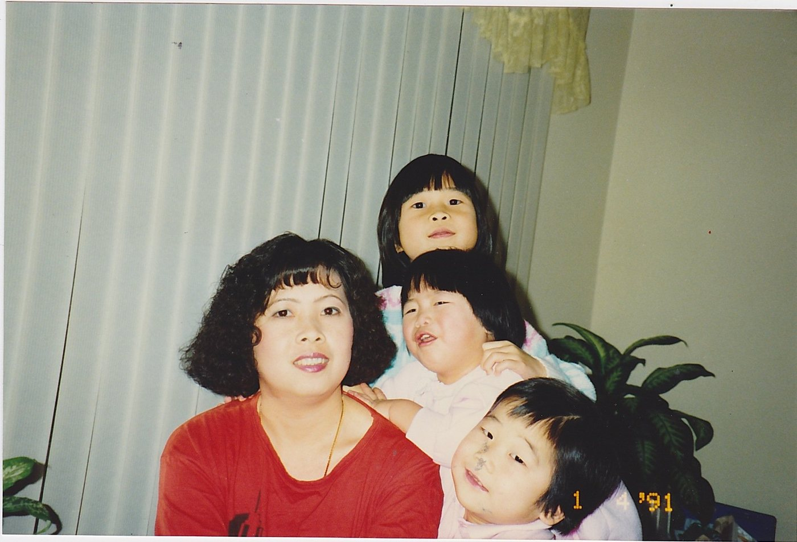
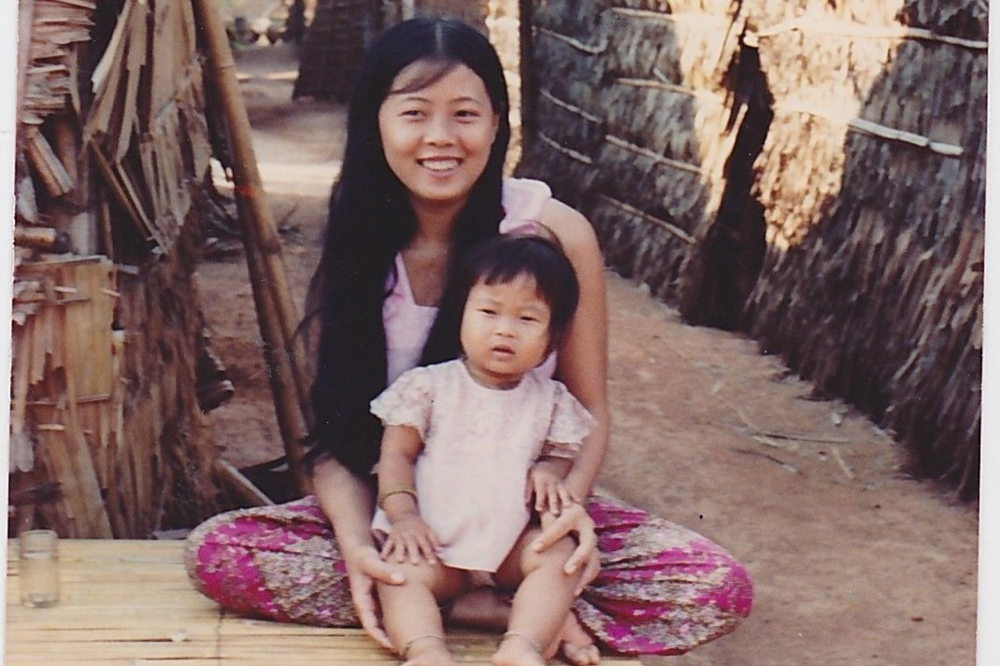
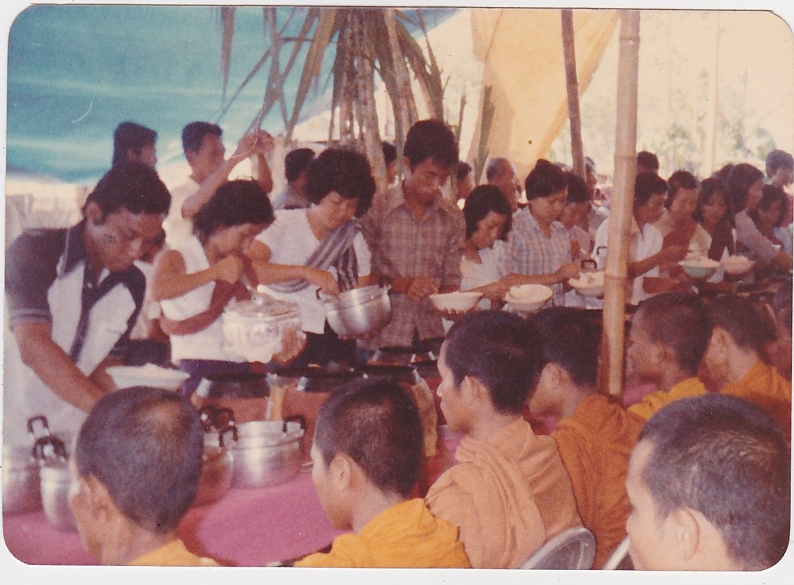
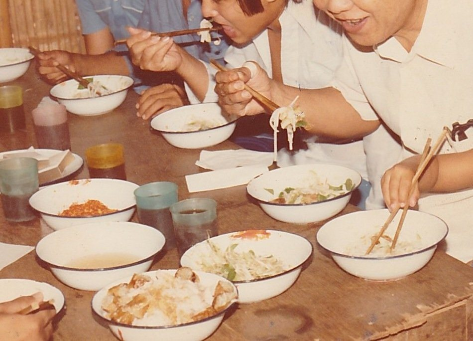
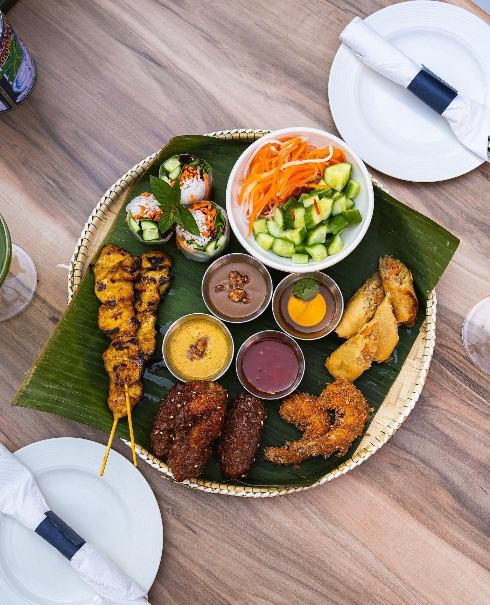

Cuisine du Sud-Est asiatique, Faubourg Boisbriand
Kampot កំពត
La cuisine de notre mère, servie à Boisbriand.
Une table familiale d'Asie du Sud-Est, autour du wok, du poivre de Kampot et des brunchs du week-end.

La maison
La table familiale
Kampot est une entreprise familiale qui apporte à Boisbriand un avant-goût de l'Asie du Sud-Est. Notre nom vient du Kampot, la province cambodgienne réputée pour son poivre, celui qui assaisonne nos plats.
Ici, la cuisine de notre mère se sert avec une touche moderne, dans une salle où l'on espère que vous vous sentirez chez vous.
Lire notre histoire

Notre histoire
Une table, une famille.
« La cuisine de notre mère, sa façon de montrer son amour. »
Le restaurant Kampot est une entreprise familiale offrant à Boisbriand un avant-goût de l'Asie du Sud-Est. L'idée est née dans la cuisine de notre mère, sa façon de montrer son amour.
Tout au long de notre enfance, nous nous réveillions au son du grésillement du wok, au martèlement du mortier et du pilon, à l'odeur du riz fumant. La nourriture est devenue une façon pour nous de montrer notre appréciation et notre gratitude les uns envers les autres.
Le soir, la salle se remplit des plats de notre enfance : généreux, lumineux, faits pour être partagés.
Notre menu rassemble certains de nos plats préférés, ceux qui nous rappellent la maison. Nous espérons que vous nous rejoindrez.
Découvrir la carte



Photos de famille
Nous trouver
Au Faubourg Boisbriand.
Un détour par Boisbriand pour un souper de famille, un brunch du week-end ou un verre au bar.
Boisbriand, QC J7H 0A7
(450) 433-8881 info@restaurantkampot.com
Ouvert 7 jours
À côté de Jack Astor's et Vertigo.
Heures d'ouverture
Brunch servi samedi et dimanche, de 10 h à 14 h.
Réservation en ligne via Libro. Pour les groupes et le traiteur, écrivez-nous.

Traiteur
Pour vos célébrations.
Peu importe la célébration, nous proposons des menus spéciaux pour tous vos besoins de service traiteur. Contactez-nous pour plus d'informations.
Écrire à l'équipe